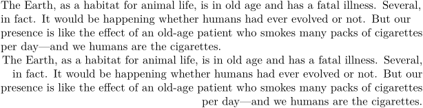
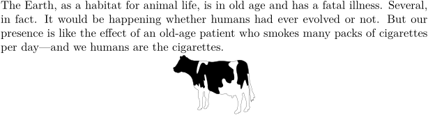

Contents
Summary
The environment \startalignment ... \stopalignment is used for ...
Settings
Description
Use a different alignment for the content between
\startalignment
...\stopalignment
. For a description of the keys, see
\setupalign
.
If one wants to center a figure, a table, or something similar, one should add \dontleavehmode.
Examples
Example 1
-
\setupalign[flushleft, nothyphenated] \input ward \startalignment[flushright] \input ward \stopalignment
- 
Example 2
-
% Tell the wiki engine where the cow is located \setupexternalfigures[location={local,default}] \input ward \startalignment[middle]% or center \dontleavehmode \externalfigure[cow][width=2cm] \stopalignment
- 
Notes
- By Taco on 2023-09-12T21:36:06+0200 :
This environment is called \startalignment, but inherits from \setupalign. This environment is not to be confused with \startalign (which aligns items with eachother inside mathematical formulas).
See also
- \setupalign to setup alignment for the entire document
- spac-ali.mkiv
- \startmathalignment for alignment in mathematical environments, and the Using \startalign My Way linked from My Way page
- \startalign is a synonym for \startmathalignment . It merely uses the AMSTeX naming convention instead of the ConTeXt one.